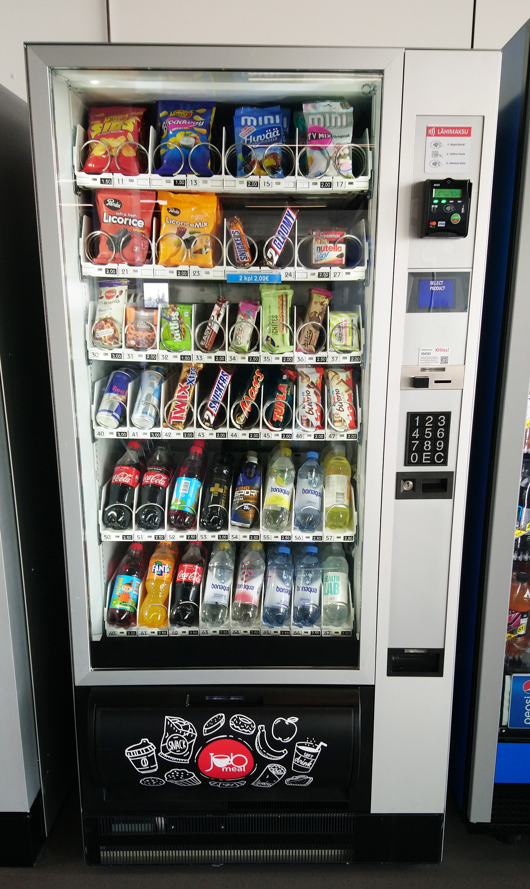
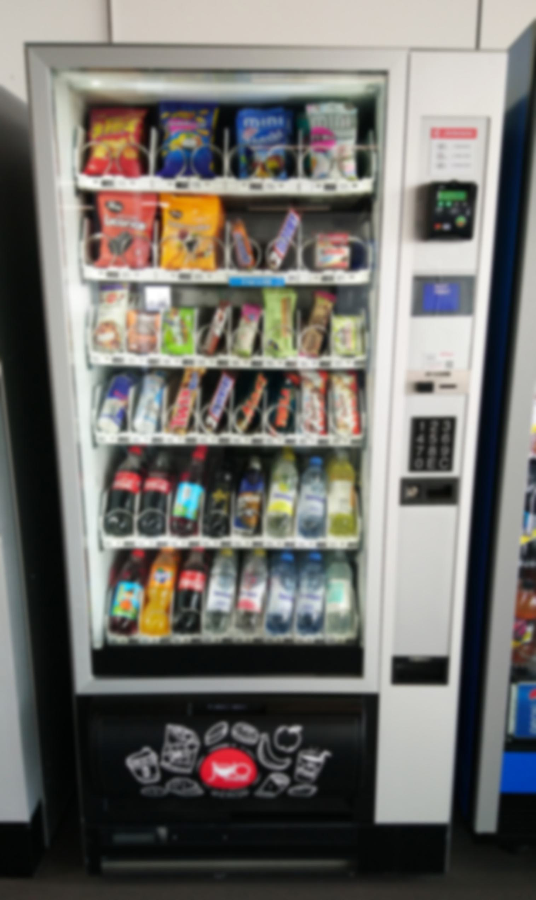
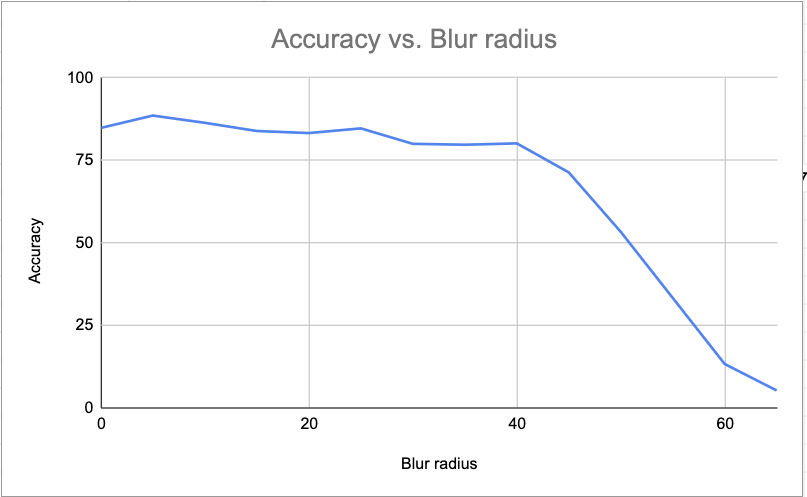

Project 2: Image classification accuracy with added blur
I used the ResNet101 model pre-trained on ImageNet, with default weights.
I followed
this tutorial to set up the Python, it was my first experience using image classifiers.
To produce the corrupted image, I used Gaussian Blur from
Pillow.
I chose to use blur mostly because it was simple, and I don't have much experience in computer vision.
I am interested in understanding how adding blur affects the vector (rbg -> embedding) representation of the data, but I don't know enough about how Gaussian Blur modifies either type of vector for this to be the main reason.
I chose a vending machine because vending machines generally take up a large part of the frame, which I suppose reduces evaluation error from detecting secondary objects.
Also, 'vending machine' is an ImageNet class, and I chose one of the first few Google search results, so the model should be able to classify it well.
To blur the image, a series of radii were passed as argument to the blur function, then the resulting imaging passed through the classifier.
Here are the modified versions of the original image, with increasing radii, and rounded confidence values produced by the classifier:

Original
Confidence: 84.69

Blur radius: 5
Confidence: 88.43
Blur radius: 10
Confidence: 86.24
Blur radius: 15
Confidence: 83.75
Blur radius: 20
Confidence: 83.13
Blur radius: 25
Confidence: 84.55
Blur radius: 30
Confidence: 79.88
Blur radius: 35
Confidence: 79.59
Blur radius: 40
Confidence: 80.01
Blur radius: 45
Confidence: 71.232
Blur radius: 50
Confidence: 53.221
Blur radius: 55
Confidence: 33.17
Blur radius: 60
Confidence: 13.16
Blur radius: 65
Confidence: 5.14
The model classified accurately up to a blur radius of 60. At blur radius 65, confidence was ~5.14, and less than the "remote control, remote" class at ~16.05.
At blur radius of 70, 'vending machine' was no longer one of the top 10 classes determined by the classifier.

An interesting trend is the drop-off in accuracy between 40(80.01) and 50(53.22). I learned the basics of using a classifier, that ImageNet does not have an apple class,
that blur has an interesting effect on the accuracy, especially in where the cutoff for accurate classification is. I've developed further interest in understanding computer vision, including
image classification and understanding the vector math behind it (as it is hard to tell what is going on without understanding this).